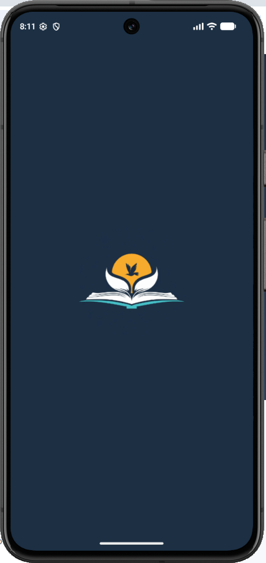
1
Start the app
Calibre Touch opens with its splash screen while it loads.
A step-by-step guide to setting up Calibre Touch and finding your way around your library.
The first time you open Calibre Touch, a short setup guides you through choosing where your books are kept.

Calibre Touch opens with its splash screen while it loads.
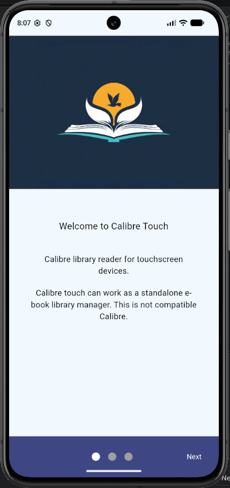
The welcome screen introduces the app. Tap Next to continue. You can also tap the dots at the bottom to move between setup pages.
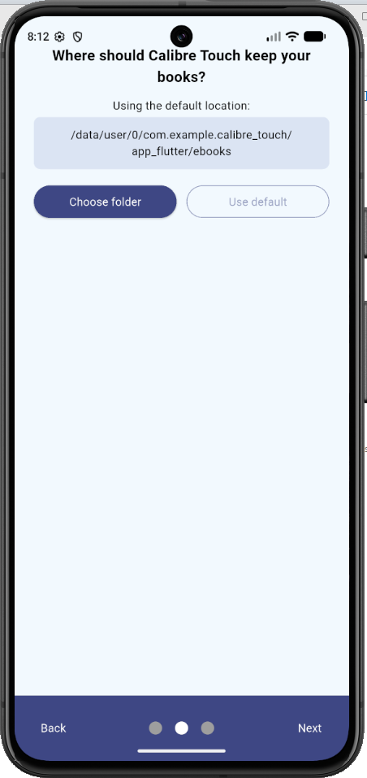
Calibre Touch shows the folder it will use for your library.
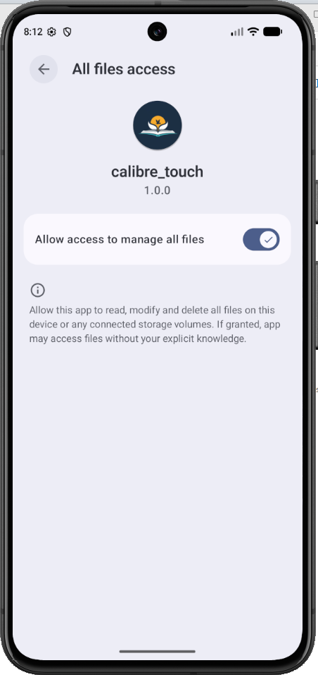
If you choose your own folder, Android asks for file access. Switch on Allow access to manage all files, then go back to the app with the back arrow.
Calibre Touch only uses this permission to list, search and open your books. See the privacy policy.
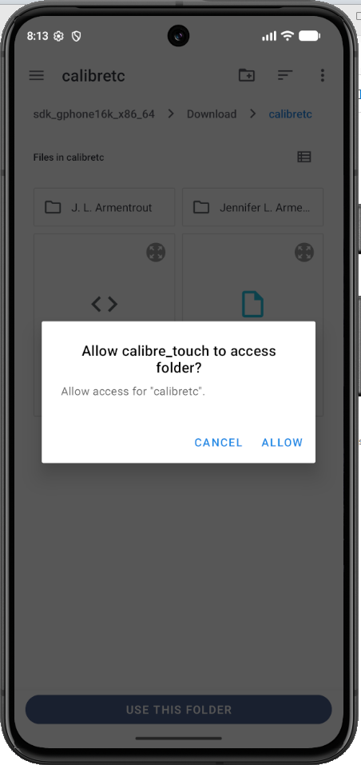
Browse to the folder that holds your books and tap Use this folder. When Android asks whether to allow access to the folder, tap Allow.
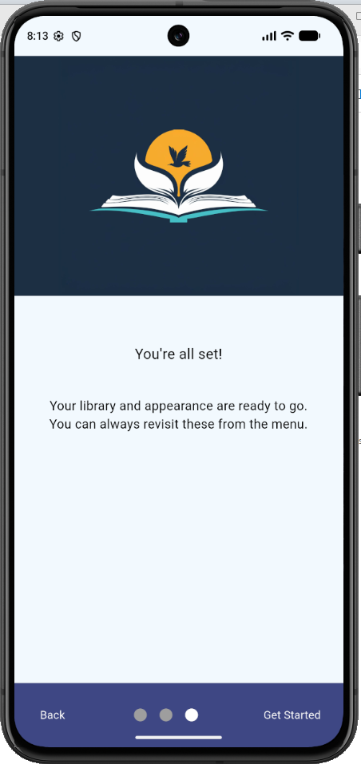
Tap Get Started to open your library. You can change these choices later in Settings.
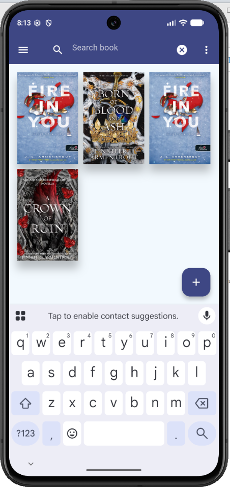
Tap the search icon at the top of the screen and start typing a title or author. The list updates as you type. Accents don't matter, so "tuz" also finds "tűz".
Tap ✕ to clear the search and show all your books again.
Choose how your library is shown: as covers, as a list, or as a table.
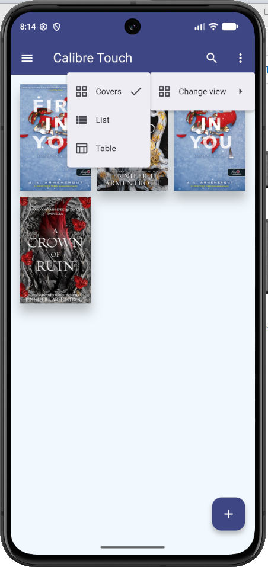
Tap the ⋮ menu in the top-right corner, then Change view, and choose Covers, List or Table. The current view has a check mark.
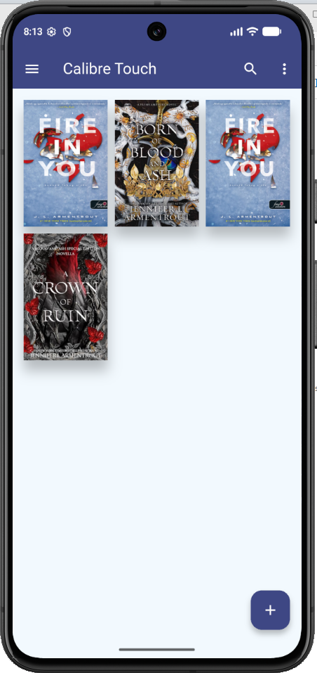
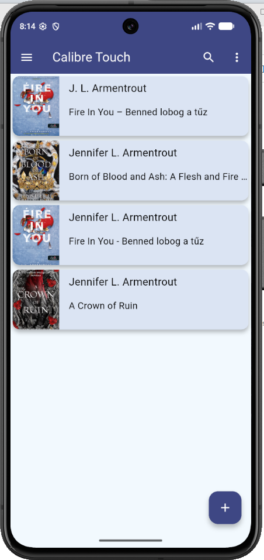
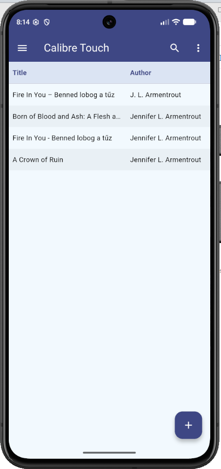
Write to kurjak.richard@gmail.com and describe what you're trying to do.